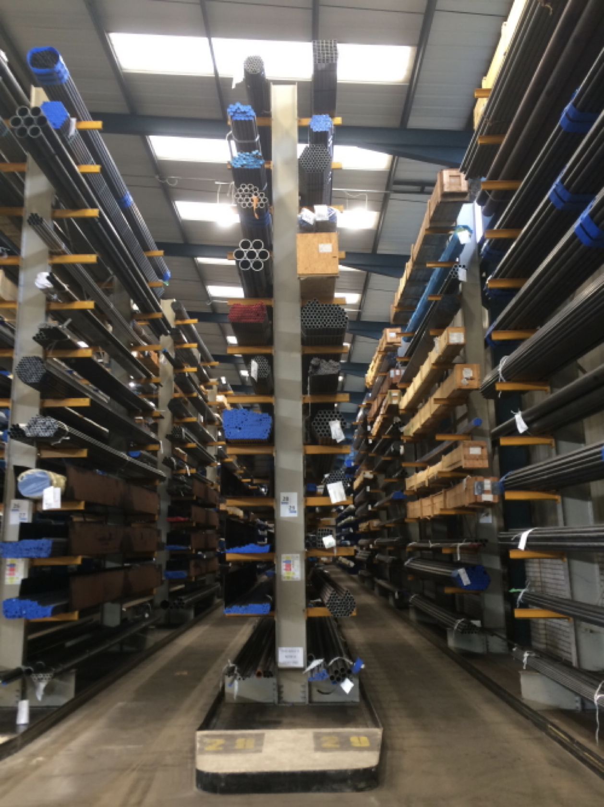

Introducción a la Estadística
IN2032: Análisis Estadístico de Datos
Departmento de Ingeniería Industrial
Agenda
Introducción
Muestreo
Experimentos y estudios observacionales
Resumenes estadísticos
Introducción
¿Por qué la estadística?
Hacer frente a la incertidumbre en mediciones científicas repetidas.
Sacar conclusiones confiables de los datos.
Diseñar experimentos válidos y sacar conclusiones fiables.
Construir modelos o algoritmos para predecir eventos futuros.
Ser un miembro bien informado de la sociedad.
Ejemplo 1
Una máquina fabrica varillas de acero para usar en dispositivos de almacenamiento óptico.
La especificación para el diámetro de las varillas es 0.45 ± 0.02 cm.
Durante la última hora, la máquina ha fabricado 1000 varillas.
El ingeniero de calidad quiere saber aproximadamente cuántas de estas varillas cumplen con la especificación.
¡Pero no tiene tiempo para medir las 1000 varillas!

Solución: tomar una muestra aleatoria de 50 varillas y medirlas.
Al hacer esto, el ingeniero descubre que 46 de ellas (92%) cumplen con la especificación de diámetro.

Sin embargo
Es poco probable que la muestra de 50 barras represente perfectamente a la población de 1000.
Es probable que la proporción de varillas buenas en la población difiera algo de la proporción de la muestra.
El ingeniero debe responder preguntas basadas en los datos de muestra. Por ejemplo:
¿Qué intervalo da una buena estimación del porcentaje de varillas aceptables en la población con certeza razonable?
¿Qué tan seguro puede estar el ingeniero de que al menos el 90% de las varillas están en buenas condiciones?
¡La estadística nos ayuda contestar preguntas como éstas!
Muestreo
Muestreo
Conceptos importantes preliminares:
Una población es la colección completa de objetos o resultados sobre los cuales se busca información.
Una muestra es un subconjunto de una población que contiene los objetos o resultados que realmente se observan.
Una muestra aleatoria simple (MAS) de tamaño \(n\) es una muestra elegida mediante un método en el que cada colección de \(n\) elementos de la población tiene la misma probabilidad de constituir la muestra, tal como en la lotería.
Ejemplo 2
En una universidad grande, una profesora está interesado en la altura promedio de los estudiantes de la universidad.
Obtiene una lista de los 50,000 estudiantes matriculados en la universidad y asigna un número a cada estudiante.
Ella utiliza un generador de números aleatorios por computadora para generar 100 números enteros aleatorios entre 1 y 50,000, y los estudiantes correspondientes a esos números son seleccionados para medir su altura.
Esta es una muestra aleatoria simple.
Variación muestral
No se garantiza que una muestra aleatoria simple (MAS) refleje perfectamente la población.
Las MAS siempre difieren en algunos aspectos entre sí; ocasionalmente una muestra es sustancialmente diferente de la población.
Dos muestras diferentes de la misma población también variarán entre sí.
Este fenómeno se conoce como variación muestral.
De regreso al Ejemplo 1
En la muestra que recopiló el ingeniero, el 92% cumplía con las especificaciones.
De la población de 1000 barras, es poco probable que exactamente el 92% cumpla con las especificaciones.
Debido a la variación del muestreo, es más realista pensar que la verdadera proporción de varillas que cumplen con las especificaciones será cercana a la proporción de la muestra, o 92%.
Población conceptual
Una población conceptual consta de todos los valores que posiblemente podrían haberse observado en una población.
Por ejemplo, un geólogo pesa una roca varias veces en una balanza sensible. Cada vez, la báscula da una lectura ligeramente diferente.
Aquí la población es conceptual. Consta de todas las lecturas que, en principio, la báscula podría producir.
Independencia
Se dice que los elementos de una muestra son independientes si conocer los valores de algunos de ellos no ayuda a predecir los valores de los demás.
Los elementos de una muestra aleatoria simple pueden tratarse como independientes en la mayoría de los casos encontrados en la práctica.
Una excepción ocurre cuando la población es finita y la muestra comprende una fracción sustancial (más del 5%) de la población.
Experimentos y Estudios Observacionales
Estudios observacionales
Un estudio observacional es aquel en el que el científico simplemente observa un fenómeno y registra datos, sin tener ningún control sobre el fenómeno.
Los estudios observacionales son valiosos para descubrir tendencias y posibles asociaciones.
Sin embargo, ¡no son tan buenos como los experimentos controlados para obtener conclusiones confiables sobre causa-y-efecto!
Experimentos controlados
Un experimento controlado es aquel en el que el científico tiene un grado de control sobre el fenómeno tal que le permite recolectar datos sobre el mismo de una manera estructurada.
Se pueden utilizar diferentes experimentos para generar datos:
Los experimentos de una muestra involucran solo una población de interés y de ella se extrae una única muestra.
Los experimentos de muestras múltiples involucran dos o más poblaciones de interés y se extrae una sola muestra de cada población.
Los experimentos controlados permiten establecer relaciones de causa-y-efecto.
Resumenes estadísticos
Tipos de datos I
Cuando se asigna una cantidad numérica que designa cuánto o cuántos a cada elemento de la muestra, el conjunto de valores resultante es numérico o cuantitativo.
Altura (en centímetros).
Peso (en kilogramos).
Edad (en años).
Tipos de datos II
Cuando los elementos de muestra se colocan en categorías y se asignan nombres de categorías a los elementos de muestra, los datos son categóricos o cualitativos.
Color de cabello.
País de origen.
Código postal.
Resúmenes estadísticos
Una muestra suele ser una larga lista de números. Para ayudar a resaltar las características importantes de una muestra, calculamos estadísticas resumidas.
Para datos numéricos, las estadísticas resumidas más populares son:
Muestra promedio.
Variación de la muestra.
Desviación estándar muestral.
Media muestral
Denotemos \(y_1, y_2, \ldots, y_n\) observaciones como \(n\). La media muestral (promedio) es:
\[\bar{y} = \frac{1}{n}\sum_{i=1}^{n} y_i = \frac{y_1+y_2+\cdots+y_n}{n}.\]
La media muestral indica el centro de los datos.
Varianza muestral
Denotemos \(y_1, y_2, \ldots, y_n\) observaciones como \(n\). La varianza muestral es:
\[s^2 = \frac{1}{n-1} \sum_{i=1}^{n} (y_i - \bar{y})^2 = \frac{1}{n-1} \left( (y_1 - \bar{y})^2 + (y_2 - \bar{y})^2 +\cdots + (y_n - \bar{y})^2\right).\]
La varianza muestral es como un promedio de las diferencias al cuadrado entre cada observación y la media muestral. Da una indicación de cuán dispersos están los datos.
Desviación estándar muestral
Un inconveniente de la varianza muestral es que no está en la misma escala que las observaciones reales. Esto se debe a que las diferencias entre cada observación y la media muestral se elevan al cuadrado.
Para obtener una medida de dispersión cuyas unidades sean las mismas que las de la muestra, simplemente tomamos la raíz cuadrada de la varianza muestral.
\[s =\sqrt{\frac{1}{n-1} \sum_{i=1}^{n} (y_i - \bar{y})^2}.\]
Esta cantidad se conoce como desviación estándar muestral.
Estadísticas muestrales y parámetros de población
Cada estadística de muestra aquí tiene una contraparte de parámetro poblacional.
Los resúmenes numéricos de una muestra se llaman estadísticas.
Los resúmenes numéricos o características de una población se denominan parámetros.
Para la población:
La media es \(\mu\).
La varianza es \(\sigma^2\).
La desviación estándar es \(\sigma\).
Para la muestra:
La media (promedio) es \(\bar{y}\).
La varianza es \(s^2\).
La desviación estándar es \(s\).
Uno de los objetivos de esta clase es aprender o estimar los parámetros de la población utilizando estadísticas de muestra.
Resumen estadistico de variables categoricas
Los dos resúmenes numéricos más utilizados para datos categóricos son las frecuencias y las proporciones muestrales (a veces llamadas frecuencias relativas).
La frecuencia de una categoría determinada es simplemente la cantidad de elementos de muestra que caen en esa categoría.
La proporción muestral es la frecuencia dividida por el tamaño de la muestra.
Preguntas de práctica para examen
Explica la variación muestral.
Define el concepto de independencia.
¿Qué es la desviación estándar? ¿Cómo se calcula?
Return to main page

Tecnológico de Monterrey